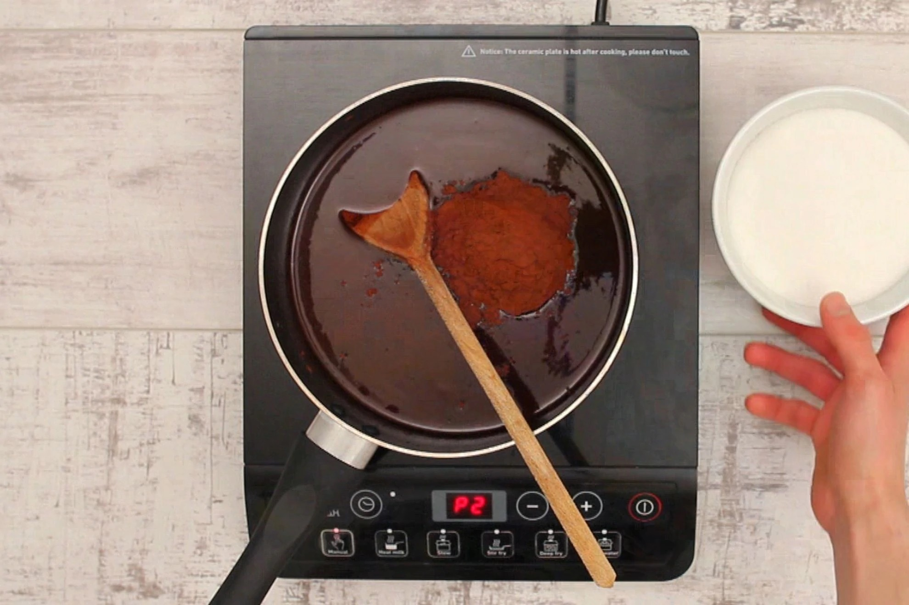
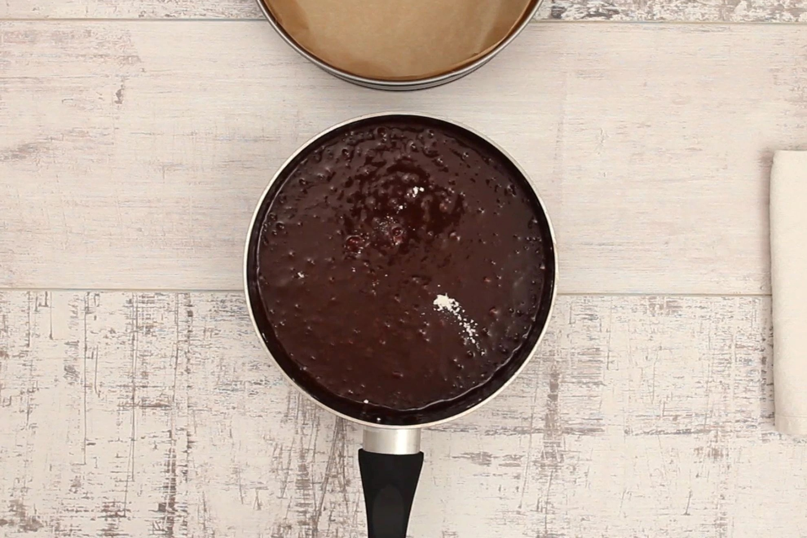
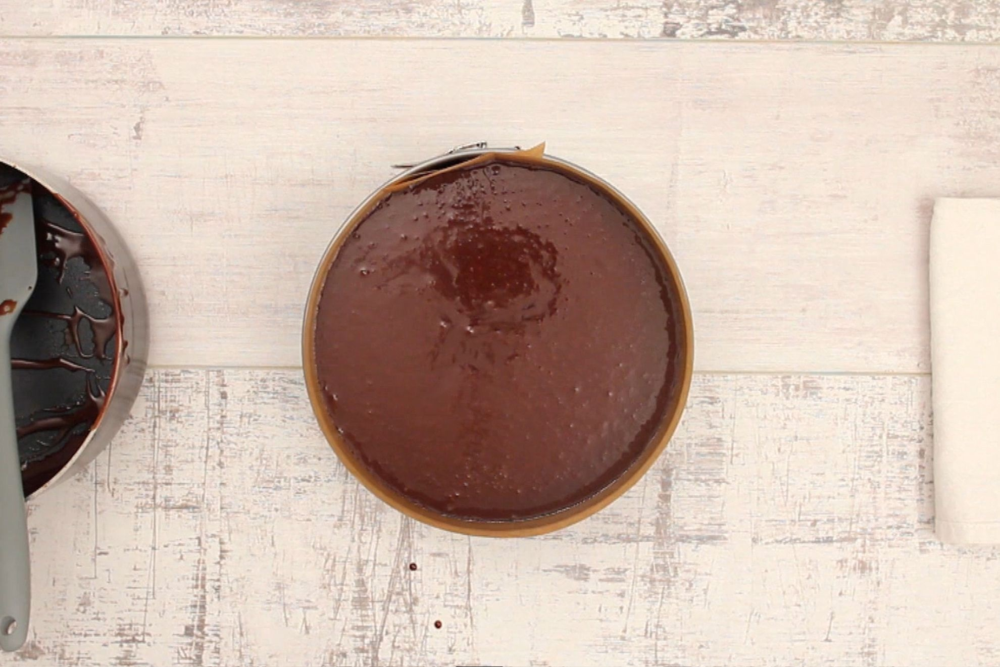

Method
In a saucepan over low heat melt together, butter, cocoa, chocolate, sugar, vanilla and hot water.
When cooled add flour and eggs and mix well. The mixture will be very runny.
Pour into a lined 30 cm cake tin and bake at 150 C for 1 hour and 15 minutes.
Allow to cool for 5 minutes before turning out.
When cool sprinkle with icing sugar.
May be served re-heated in the microwave or cool with cream or ice cream.
Click HERE to navigate back to recipes